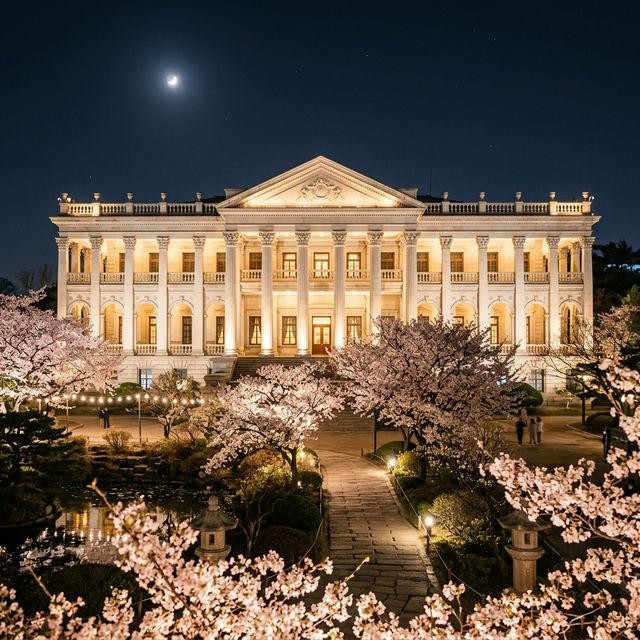
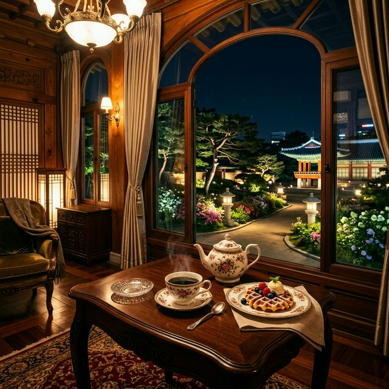
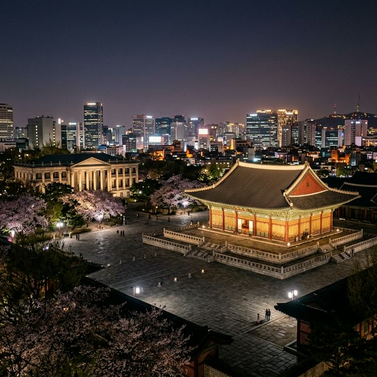

덕수궁 밤의 석조전 명품 가이드 — 대한제국의 낭만이 흐르는 봄날의 야간 산책
🏛️ 황실의 밤: '밤의 석조전'은 고전적인 신고전주의 양식의 석조전 내부를 야간에 관람하며 고종 황제가 즐겼던 가배와 디저트를 체험하는
덕수궁 최고의 프리미엄 프로그램입니다.
☕ 이색 체험: 석조전 테라스에서 내려다보는 고궁의 야경과 함께 서양식 디전트인 와플을 즐기는 특별한 시간을 선사합니다.
✅ 필수 정보: 100% 사전 예약제로 운영되며, 매회 예매가 순식간에 매진되는 만큼 정확한 예매 전략이 필요합니다.
서울 도심 한복판, 현대적인 빌딩 숲 사이에 자리 잡은 덕수궁은 우리 역사 속 가장 격동적이면서도 낭만적이었던 대한제국의 숨결이 살아있는 곳입니다. 특히 4월 봄바람이
살랑이는 밤, 은은한 조명을 받은 하얀 석조전의 모습은 마치 유럽의 어느 왕궁에 온 듯한 착각을 불러일으키는데요. 매년 봄과 가을 한시적으로 열리는 '밤의 석조전'은
단순한 관람을 넘어, 역사의 한 장면 속으로 직접 걸어 들어가는 듯한 경험을 제공합니다. 2026년 봄, 사랑하는 이와 함께 가장 우아하게 서울의 밤을 즐기는 법을 지금 공유합니다.

조명을 받아 더욱 웅장하고 아름답게 빛나는 대한제국의 황궁, 석조전. (AI 제작 이미지)
1. 밤의 석조전 프로그램 구성 (90분의 마법)
프로그램은 약 90분 동안 진행되며, 전문 해설사의 안내에 따라 석조전의 구석구석을 탐방하게 됩니다.
- 석조전 야간 탐방: 접견실, 침실, 서재 등 대한제국 황실의 생활 공간을 밤의 정취와 함께 돌아봅니다.
- 테라스 카페 체험: 석조전 2층 테라스에서 덕수궁의 야경을 감상하며 가배(커피) 또는 유자차와 함께
와플 디저트를 즐깁니다.
- 음악 공연: 고종 황제가 사랑했던 음악을 현대적으로 재구성한 소규모 공연이 펼쳐져 낭만을 더합니다.
2. 고종 황제의 즐거움: 가배와 와플
고종 황제는 커피(가배)를 무척이나 사랑했던 군주로 잘 알려져 있습니다. '밤의 석조전' 체험의 하이라이트는 바로 황제가 즐겼던 그 맛을 재현한 티타임인데요. 당시 황실에서 즐겼던 서양식 디저트인 와플과
은은한 향의 커피를 즐기며 바라보는 중화전의 야경은 일상에서 느끼기 힘든 최고의 휴식을 선사합니다. 2026년 프로그램에서는 더욱 고증을 살린 황실 다과 세트가 준비되어
방문객들의 호평을 받고 있습니다.
🎟️ 밤의 석조전 예약 성공 전략
1
예매처 확인: 주로 인터파크나 티켓링크를 통해 예매가 진행됩니다. 사전에 회원가입과 로그인은 필수입니다.
2
취소표 공략: 정규 예매를 놓쳤다면 취하 물량이 풀리는 당일 오전이나 며칠 전 밤 시간을 유심히 살펴보세요.
3
특별 전형 확인: 어르신, 장애인, 국가유공자를 위한 별도 예매 회차가 있으니 대상자라면 이를 적극 활용하세요.

고궁의 야경이 내려다보이는 테라스에서 즐기는 황실 다과와 가배 한 잔. (AI 제작 이미지)
3. 덕수궁의 봄꽃 야경
프로그램 시작 전후로 덕수궁 경내를 산책하는 것도 잊지 마세요. 4월 중순의 덕수궁은 살구꽃(산란궁)과 벚꽃이 고풍스러운 한옥 기와와 어우러져
장관을 이룹니다. 특히 정관헌 주변의 조명 아래 핀 봄꽃들은 낮보다 훨씬 몽환적인 분위기를 자아냅니다. 석조전 앞 분수대 광장은 덕수궁 내에서 가장 이국적인 사진을 찍을
수 있는 명당이니 꼭 들러보시길 바랍니다.
| 구분 |
상세 내용 |
비고 |
| 참가비 |
인당 26,000원 |
다과 및 관람 포함 |
| 운영 회차 |
1일 3회 (18:15 / 18:50 / 19:25) |
시즌별 상이 |
| 관람 장소 |
덕수궁 석조전 내부 및 테라스 |
야외 도보 이동 포함 |

전통과 현대가 공존하는 서울의 밤, 덕수궁에서만 만날 수 있는 특별한 풍경. (AI 제작 이미지)
4. 함께하기 좋은 정동 산책 코스
덕수궁 관람을 마친 후 정동길로 이어지는 산책 코스는 데이트의 정석입니다.
- 정동길 밤산책: 돌담길을 따라 늘어선 가로등 조명이 운치를 더합니다.
- 시청광장 야경: 덕수궁 정문인 대한문 맞은편 광장의 분수 쇼와 야경도 놓치기 아쉬운 볼거리입니다.
- 정동극장 주변 카페: 늦은 시간까지 운영되는 감성 카페들에서 여행의 여운을 나누기 좋습니다.
💡 복장 Tip: 야간에는 고궁의 온도가 급격히 낮아질 수 있습니다. 특히 테라스에서의 티타임을 즐길 때 쌀쌀할 수 있으니 가벼운 머플러나
겉옷을 반드시 챙기시길 바랍니다.
5. 결론: 가장 우아하게 봄을 보내는 방법
복잡한 일상에서 잠시 벗어나 100년 전 황실의 일원이 된 듯한 기분을 느껴보고 싶으시다면, '밤의 석조전'은 최고의 선택이 될 것입니다. 2026년
4월, 은은한 가배 향기와 함께 덕수궁의 봄밤을 거니는 경험은 여러분의 가슴 속에 오래도록 지워지지 않을 선명한 추억으로 남을 것입니다. 예약의 어려움을 뚫고서라도 한 번쯤은 꼭
경험해 보시길 강력하게 추천해 드립니다.
본 기사는 덕수궁 관리소 공식 일정 및 2026년 봄 시즌 가이드를 참고하여 작성되었습니다. 현장 상황이나 기상 악화(우천 등) 시 프로그램 내용이 일부 변경될 수 있으므로 방문 전 문자 안내 또는
공식 홈페이지 공지사항을 꼭 확인하시기 바랍니다.
#밤의석조전예약
#덕수궁야간관람
#서울데이트코스추천
#석조전가배와와플
#덕수궁벚꽃야경
#정동길밤산책
#서울가볼만한곳
#고궁체험프로그램
#대한제국역사투어
#4월서울축제